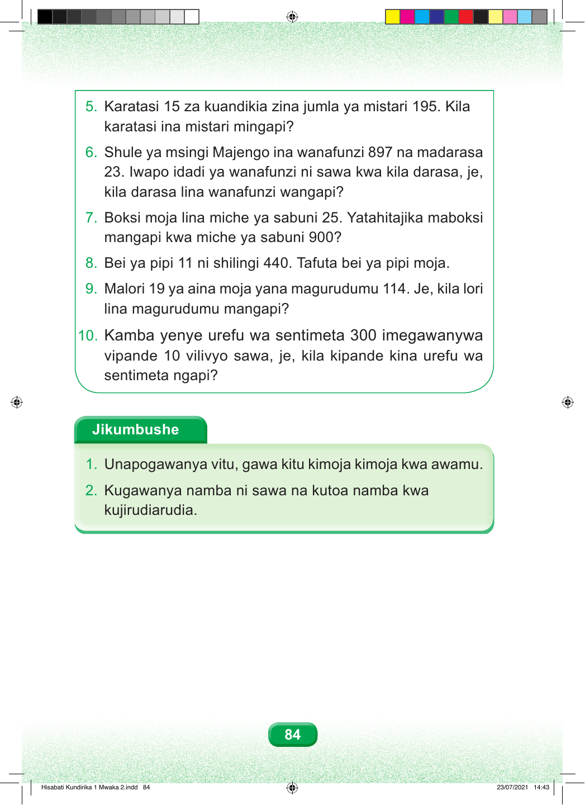

5. Karatasi 15 za kuandikia zina jumla ya mistari 195. Kila karatasi ina mistari mingapi? 6. Shule ya msingi Majengo ina wanafunzi 897 na madarasa 23. Iwapo idadi ya wanafunzi ni sawa kwa kila darasa, je, kila darasa lina wanafunzi wangapi? 7. Boksi moja lina miche ya sabuni 25. Yatahitajika maboksi mangapi kwa miche ya sabuni 900? 8. Bei ya pipi 11 ni shilingi 440. Tafuta bei ya pipi moja. 9. Malori 19 ya aina moja yana magurudumu 114. Je, kila lori lina magurudumu mangapi? 10. Kamba yenye urefu wa sentimeta 300 imegawanywa vipande 10 vilivyo sawa, je, kila kipande kina urefu wa sentimeta ngapi? Jikumbushe 1. Unapogawanya vitu, gawa kitu kimoja kimoja kwa awamu. 2. Kugawanya namba ni sawa na kutoa namba kwa kujirudiarudia. 84 Hisabati Kundirika 1 Mwaka 2.indd 84 23/07/2021 14:43